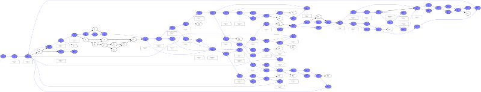
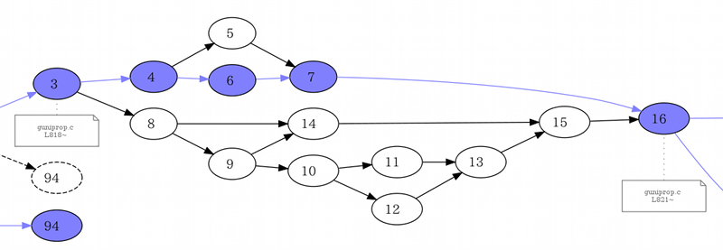
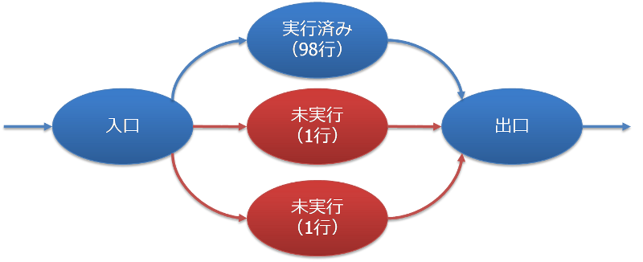

Appendix
命令カバレッジとソースコードの実行行数
gcovの出力であるgcovファイルを参照すれば、ソースコードのどの行を何回実行したのか容易に確認することができます。しかし、関数のすべての行を実行したとしても、その関数の命令カバレッジが100%になっているとは限りません。
例として、glib-2.20.5のglib/guniprop.cにある関数real_toupper()★1をとりあげてみます。FreeBSD 7.1で次のようにビルドして、付属のテストを実行してみます。
% tar jxf glib-2.20.5.tar.bz2 % cd glib-2.20.5 % ./configure CFLAGS="-O0 -fprofile-arcs -ftest-coverage" \ CPPFLAGS="-I/usr/local/include" LDFLAGS="-L/usr/local/lib -lintl" \ --with-libiconv=gnu --disable-shared --enable-static % gmake % gmake -C tests check
次にgcov、もしくはcovertureを使って、glib/guniprop.cのgcovファイルを出力します。そして、そのgcovファイルを眺めてみると、次のように、関数real_toupper()のカバレッジ結果では、未実行の行は無いことがわかります。
ところが実際には、命令カバレッジは100%ではありません。注目したいのは、次の行です。
function real_toupper called 6438 returned 100% blocks executed 87%
これは基本ブロックのうち87%を実行したことを示しています。つまり、残り13%は実行されていないことになります。いったいどの部分を実行していないでしょうか。
まず、ソースコードを眺めると、三項演算子がいくつか使われているので、その条件式が常に真、または偽、になっているのでは、ということが思い付きます。しかし、そうだとしても、それで未実行の基本ブロックが13%にもなるのは不自然な気がします。
ソースコードを眺めるだけでは、これ以上のことは簡単にはわからないでしょう。そこで、covertureの出力結果とgraphvizを使って、次のような基本ブロックのフローグラフを作成してみました（クリックで拡大します）。

実行した基本ブロックは青で塗っています。また、実行した分岐も青い線で描画しています。ただし、図が煩雑になるので、FAKEのアークは波線で表しています。
図を眺めて、まず気になる点は、基本ブロック3から8へ向かうアークが未実行で、基本ブロック8から派生する一連のブロックが未実行になっていることです。該当する部分を拡大したものを次に示します。

それらに対応するソースコードはどこになるのでしょうか。図から基本ブロック3が818行に、基本ブロック16が821行に対応していることがわかります。ソースコードの818行～821行は次のようになっています。
6492: 818: int t = TYPE (c); -: 819: gunichar val; -: 820: 6492: 821: last = p;
以上のことから、「基本ブロック3から16までの経路」はすべて818行に対応すると考えられます。これらのことから、TYPE()が怪しそうです。調べてみると、これは同じファイルで定義されている次のようなマクロでした。
TYPE()は三項演算子の盛り合わせのようなマクロであることがわかりました。そして、どうやらこのマクロを命令カバレッジするほどのテストは用意されていないようです。
★1 この関数に問題があるわけではありません。
実行したソースコード行数の割合とカバレッジ率
実行したソースコードの行数の割合をカバレッジ率として扱うことがよくあります。例えば、1000行のソースコードのうち、900行が実行されていれば、90%をカバレッジしたと考えてしまいがちです。
極端な例をあげてみましょう。次のような3つの基本ブロックに分岐する関数があり、そのうち1つだけが実行され、残りの2つは未実行であるとします。ただし、実行した基本ブロックの行数はソースコード中の98行に相当し、未実行のブロックの行数はそれぞれソースコード中の1行に相当するとします。

この関数はカバレッジ率98%のテストを実行したと言えるのでしょうか。それとも、1/3程度しかテストを実行していないのでしょうか。人によって意見は分かれるでしょうが、少なくても行数ベースでカバレッジ率を計算するだけでは、真の姿はわからないということです。
FreeBSD 8.0でカバレッジ
FreeBSD 8.0でgccにオプション-ftest-coverage -fprofile-arcs、もしくは-coverageを渡してビルドすると、次のようにundefined reference to `__stack_chk_fail_local'というエラーを表示して、リンクに失敗する場合があります。
% cat > test.c int main(void) { return 0; } ^D % gcc -coverage test.c /usr/lib/libgcov.a(_gcov.o)(.text+0x145f): In function `gcov_exit': : undefined reference to `__stack_chk_fail_local' %
次のようにオプション-fstack-protectorを指定すると、ビルドできるようになります。
% gcc -coverage -fstack-protector test.c %
{kind=link}